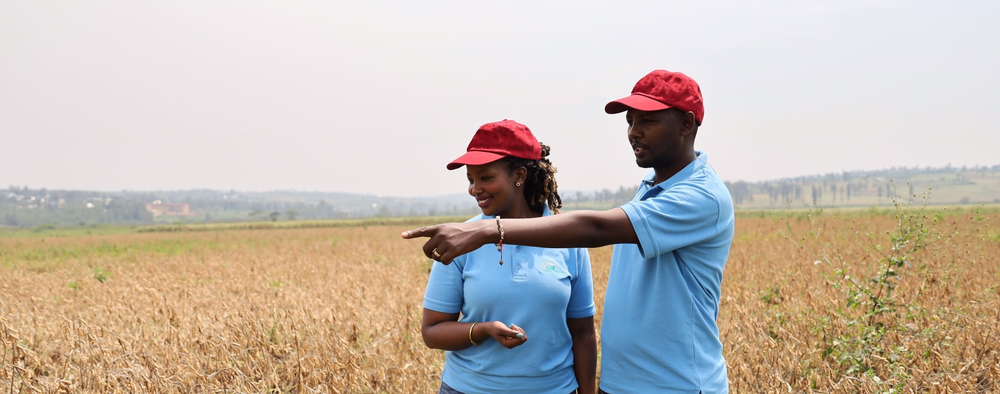

Et labore harum non nobis ipsum eum molestias
In 2020, the COVID-19 Pandemic disrupted the livelihoods of Rwandans, affecting income, food security, and social life. During this backdrop, Rose and Maurice began supporting their community with their business acumen in agriculture. As the passion for agriculture flows in Rwandan blood, Rose has been farming in her backyard for years. During the pandemic, the crops that Rose harvested became reliable source for her friends and community. It began with simple acts of sharing the harvest from her backyard—sweet potatoes, beans, maize and more — with those around her. This generosity laid the foundation for a more significant endeavor. Recognizing the potential of Rose's actions, Maurice suggested that Rose transition to creating a structured agribusiness that could serve the community. Rose has significant management expertise while Maurice, a senior Agronomist, has over 15 years of experience consulting with international NGOs. Together, the two started E&E Green Farms, registering with the RDB and receiving RICA certification in 2021. E&E Green Farm’s innovative approach involves engaging women and youth in agriculture. Rose and Maurice fostered partnerships with local cooperatives, particularly collaborating with ones that have significant women and youth members. Working with the Government of Rwanda, the E&E Farms provide training to partner farmers, aiming to improve their skills, knowledge, and enhance technology adoption. After receiving the training, farmers can work efficiently and strategically increasing crop yield, income, and competitiveness. Moving forward, the mission of the farm is clear: help more farmers access high quality seeds and create more jobs for youth and women through training, technology adoption, and greater access to markets.